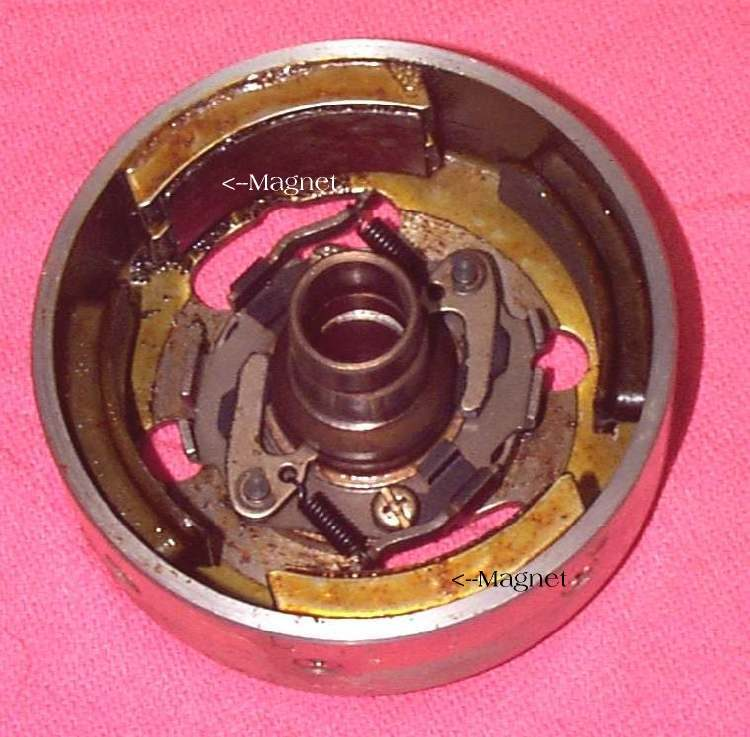
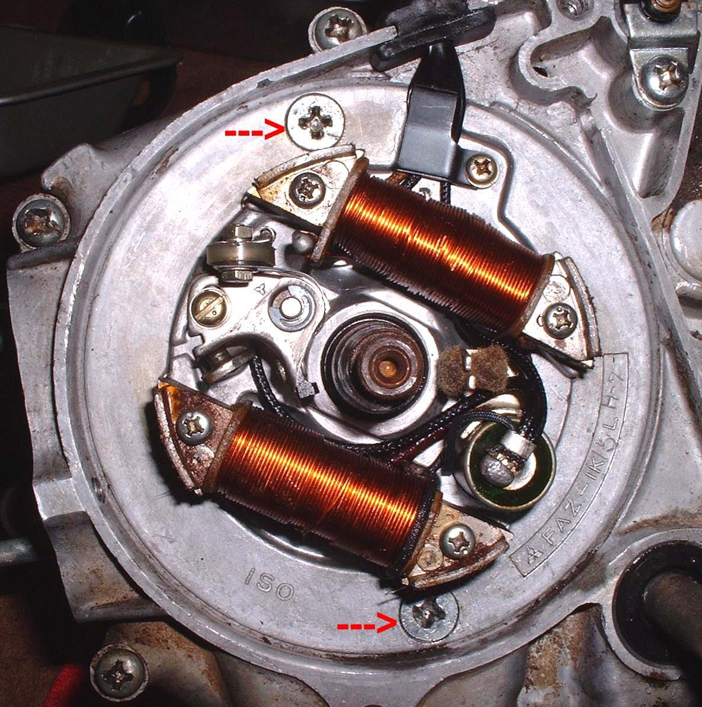
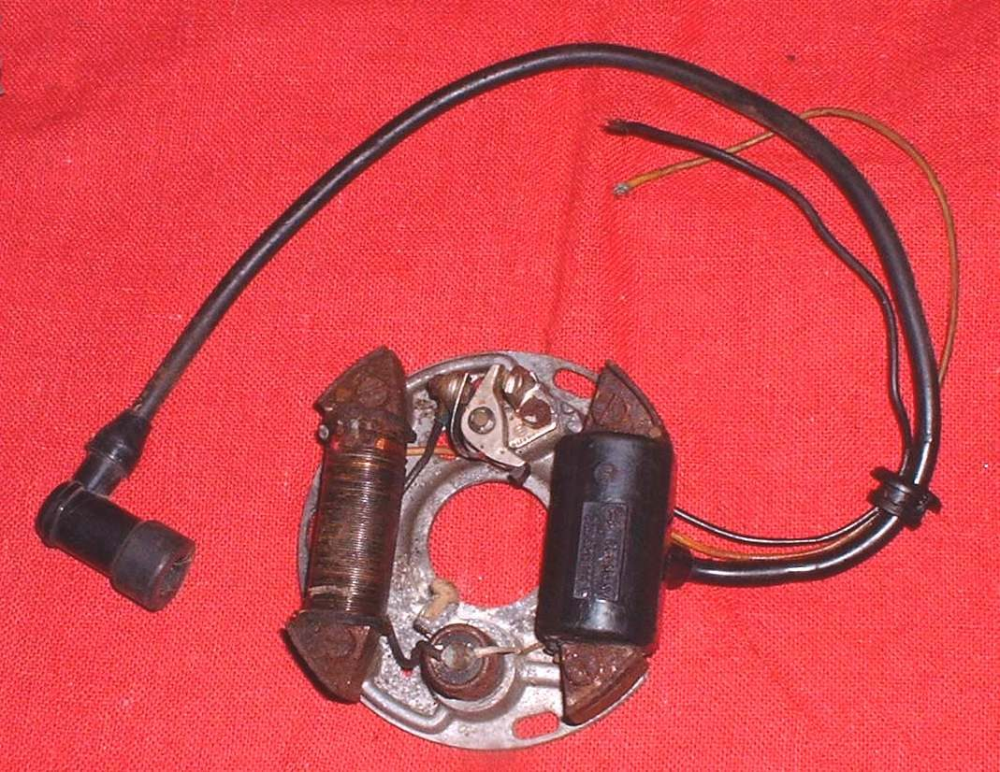
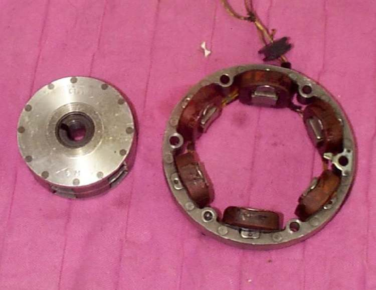

The stator and flywheel make up the bike's generator, under the left engine cover. The stator is a ring of copper coils bolted to the engine. The flywheel (rotor) is a heavy cup with magnets inside, fixed to the end of the crankshaft, that spins around the stator. On many bikes the ignition pick-up sits with the stator, and the starter clutch is fixed to the flywheel.
What it does
As the magnets spin past the coils they make AC electricity. The regulator rectifier turns this into DC to charge the battery and run the lights. The coils get hot in oil; heat and age break down the varnish on the wire, and a coil shorts or goes open. Loose or wet plugs between the stator and regulator burn.
Signs it is worn or failing
- Battery not charging or lights dim at idle.
- Burnt smell from the generator or a dark stator connector.
- No spark on bikes where the ignition is fed from a stator coil.
- Dark, burnt coils when the cover is off.
When to replace it
When a coil reads open, shorted to earth, or outside the resistance range, after checking the plug and wiring. A cracked or loose flywheel, or lost magnets, need a new flywheel. Follow your bike's manual.
What to match when buying
- Match the part number, or make, model and engine. Count coils and wires; single-phase and three-phase stators are not swappable.
- Check whether the pick-up comes with the stator.
- Rewound stators are common and can be good, but ask about wire grade and a warranty.
- The rotor that turns around the coils is a separate part: Flywheel (magnet rotor).
Fitting notes
- Home job to test: Test the stator. Removing the flywheel needs a puller and holder: workshop job.
- Clean the crank and flywheel tapers dry, fit the key, and keep metal bits off the magnets.
- Drain or catch the oil behind the cover, and use a new cover gasket.
Reference (K-Light 125)
| Item | Value | PDF page |
|---|---|---|
| Charging coil resistance (white to white) | 0.8 ± 0.3 Ω at 20 °C | 80 |
| Stator and cover bolts | 10 to 12 N·m | 82 |